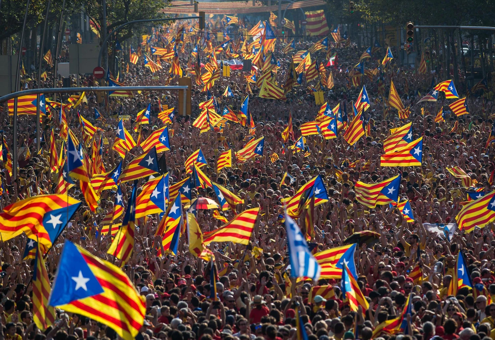
BU Madrid Study Abroad — CAS PO 249: Contemporary Spain
Cataluña
¿Should I stay or should I go?
El día que Cataluña fue
independiente por 8 segundos
El 27 de octubre de 2017, el president Carles Puigdemont salió ante el Parlament y declaró la independencia de Cataluña. Ocho segundos después, la suspendió. En internet ya circula como meme: una multitud eufórica con esteladas, y al lado, esa misma multitud con cara de "¿qué acaba de pasar?". Esa imagen, mejor que cualquier ensayo, resume el procés: una mezcla de drama, ilusión, confusión y un final bastante anticlimático.
El tiempo que duró la independencia de Cataluña el 27-O antes de que Puigdemont la suspendiera — suficiente para generar memes para toda una generación.
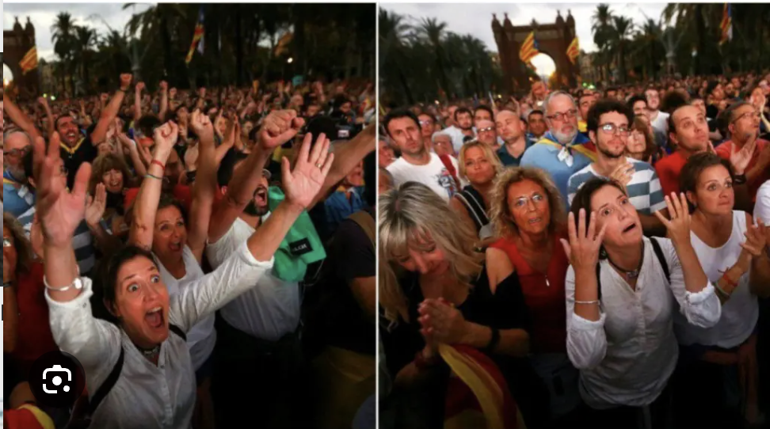
El independentismo catalán no nació en 2017, claro. Es un movimiento con raíces en el siglo XIX que pide un Estado catalán separado de España. Pero estalló como conflicto político serio a partir de 2010, cuando el Tribunal Constitucional recortó el Estatut que los catalanes habían votado en referéndum, y explotó del todo el 1 de octubre de 2017, con un referéndum ilegal en el que ganó el "sí" con cerca del 90% (de los 2,3 millones que fueron a votar).
Esta es la historia de cómo un conflicto que llegó a partir España en dos hoy es, sobre todo, un recuerdo incómodo.
¿De qué iba todo esto?
Versión sin manual de derecho constitucional
Para entender el lío hay que saber dos cosas. Primero: España no es un país centralizado al estilo francés. Es el llamado "Estado de las Autonomías", con 17 comunidades que tienen muchísimo poder propio. Cataluña es una de las que más: gestiona su sanidad, su educación (en catalán), tiene su propia policía (los Mossos d'Esquadra), sus cárceles, sus medios públicos. En la práctica, vive bastante en su propio mundo.
Comunidades autónomas con poder legislativo propio. Un modelo descentralizado, muy diferente al estilo francés.
Del PIB nacional que aporta Cataluña. La segunda comunidad más rica, base del lema "España nos roba".
El déficit fiscal estimado de Cataluña. Expolio para unos, solidaridad interterritorial para otros. Nunca se han puesto de acuerdo.
El detonante moderno fue la sentencia del Estatut en 2010. Cataluña había aprobado en referéndum un Estatuto de Autonomía con más competencias y con el reconocimiento de Cataluña como "nación". El Tribunal Constitucional lo recortó. Para mucha gente que ni siquiera era independentista, fue como si Madrid les dijera: "vuestro voto no vale". A partir de ahí, el movimiento pasó de pedir más autonomía a pedir la salida directa.
La guerra de los balcones
Si quieres ver un conflicto político no tienes que ir a ningún parlamento. Solo tienes que voltear para arriba. Durante los años más intensos del procés, los balcones de España se convirtieron en pancartas.
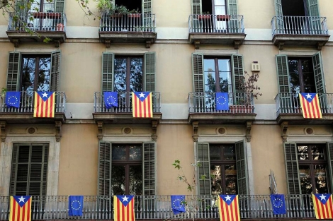
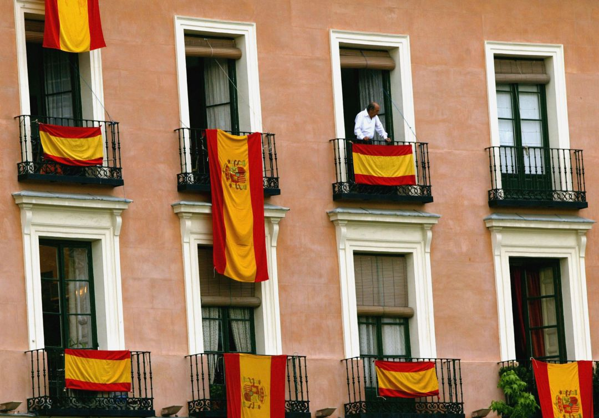
Antes de 2012, casi nadie en Madrid colgaba la bandera de España en su ventana. Eso era "cosa de fachas". Pero cuando el independentismo catalán empezó a hacerse muy visible, mucha gente respondió sacando la suya. Es lo que algunos sociólogos llaman la "respuesta espejo": cuanto más fuerte se hacía el nacionalismo catalán, más se reactivaba el nacionalismo español. Y al revés.
En las cenas de Navidad de muchas familias mixtas, "mejor no saquemos el tema" se volvió una frase muy oída entre 2017 y 2019. La política dejó de ser algo abstracto y se metió en el salón.
¿Quién está a favor y
quién está en contra?
Como cualquier conflicto identitario que se precie, el procés tuvo a sus famosos posicionándose. Declaraciones encendidas, dedicatorias inesperadas y algún que otro arrepentimiento posterior.
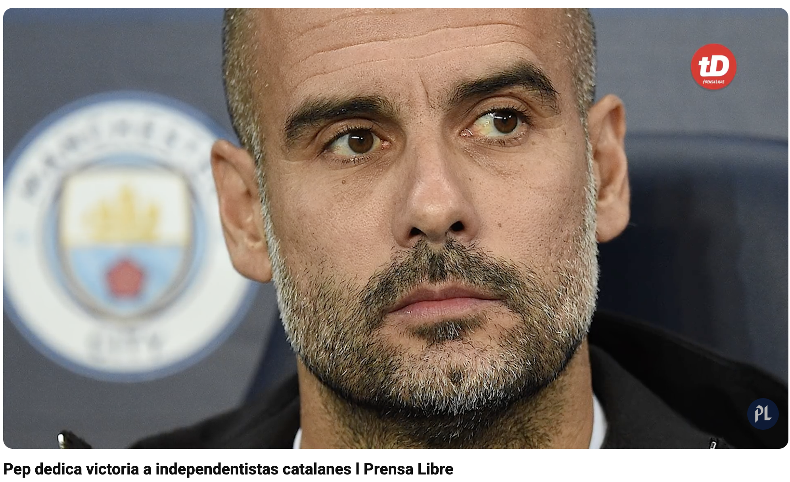
Pep Guardiola
Entrenador del Manchester City
El catalán más famoso del planeta dedicó victorias de su equipo a los líderes presos del procés y participó en actos públicos a favor del referéndum. "Para muchos catalanes, fue un orgullo. Para muchos fuera de Cataluña, fue motivo de polémica eterna en los bares deportivos."
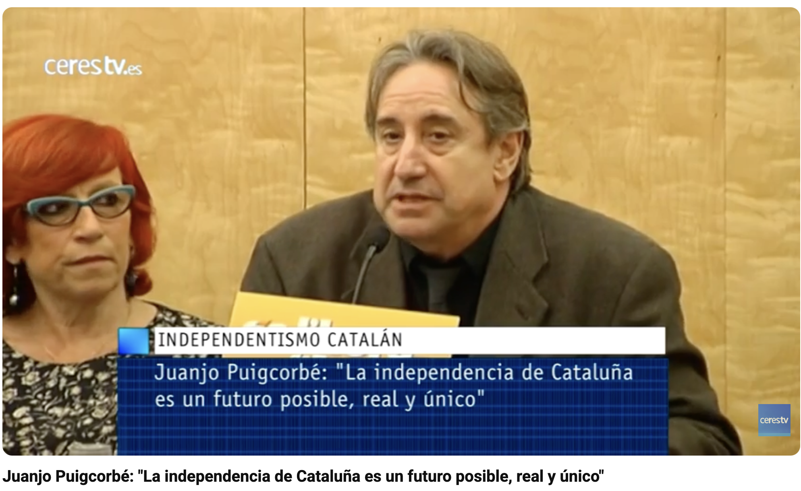
Juanjo Puigcorbé
Actor y concejal de Barcelona
"La independencia es un futuro posible, real y único." Participó activamente en el movimiento desde el Ayuntamiento de Barcelona, donde llegó a ser concejal.
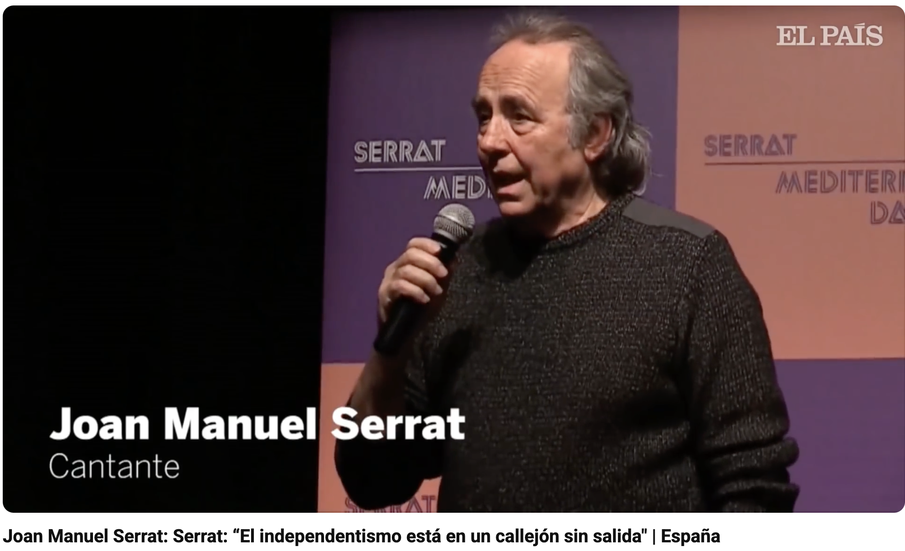
Joan Manuel Serrat
Cantautor — símbolo cultural catalán
Canta en catalán y en castellano, símbolo antifranquista y patrimonio cultural compartido. Que dijera públicamente que el independentismo estaba "en un callejón sin salida" fue un golpe enorme para el movimiento.
"No era un señor de Madrid: era uno de los suyos diciéndoles que se estaban equivocando."
De la irrelevancia
al tercer partido
Fundado en 2013 por ex-militantes del PP, Vox fue durante sus primeros años un actor prácticamente invisible en la política española. En las elecciones de 2015 y 2016 obtuvo resultados ínfimos y carecía de representación parlamentaria a cualquier nivel. Para la mayoría de los analistas, parecía condenado a la irrelevancia.
El Procés fue la gasolina de Vox. Mientras el PP parecía lento e indeciso, Vox fue el primero en llevar a los líderes independentistas al Tribunal Supremo. El punto de inflexión llegó con la crisis catalana de 2017: la celebración del referéndum unilateral del 1-O y la posterior declaración de independencia crearon un clima de excepcionalidad política que Vox supo capitalizar de forma sistemática.
Fundado en 2013 — de la irrelevancia al tercer partido de España.
De la irrelevancia al Congreso: datos clave
en 2015–16
abril 2019
noviembre 2019
El juicio del Procés (feb.–jun. 2019) funcionó como plataforma mediática de primer orden. Vox ejerció la acusación popular, otorgándole presencia constante en las noticias durante meses.
La referencia implícita al lema de Trump "Make America Great Again" no es casual. Al igual que el populismo de derechas anglosajón, Vox apela a una noción de grandeza nacional perdida. En el caso español, Cataluña ocupa un lugar central en ese imaginario.
Quizás el efecto político más duradero de la irrupción de Vox no sea tanto su propio ascenso electoral como la transformación que ha generado en el conjunto del sistema de partidos. El PP se encontró ante un dilema estratégico: absorber el discurso de Vox o ignorarlo. La evidencia sugiere que el partido optó por un endurecimiento retórico en materia territorial.
Cuando todo se volvió
un chiste (literalmente)
Pocas crisis políticas han generado tantos memes, parodias y chistes como el procés. Cuando un conflicto produce más material para guionistas que para juristas, algo dice sobre cómo lo está viviendo la sociedad.
El barco de los Looney Tunes
En octubre de 2017, el gobierno español necesitaba alojar a miles de policías y guardias civiles enviados a Cataluña para impedir el referéndum. Solución: alquilaron un crucero italiano de la naviera Moby. Pequeño detalle: el barco estaba decorado de arriba abajo con personajes de los Looney Tunes (Piolín, Bugs Bunny, el Pato Lucas).
Las imágenes del Piolín gigante en el puerto de Barcelona, custodiando a las fuerzas de seguridad enviadas para frenar la independencia, se convirtieron en lo más comentado en redes durante semanas. El meme se escribió solo.
La pela és la pela
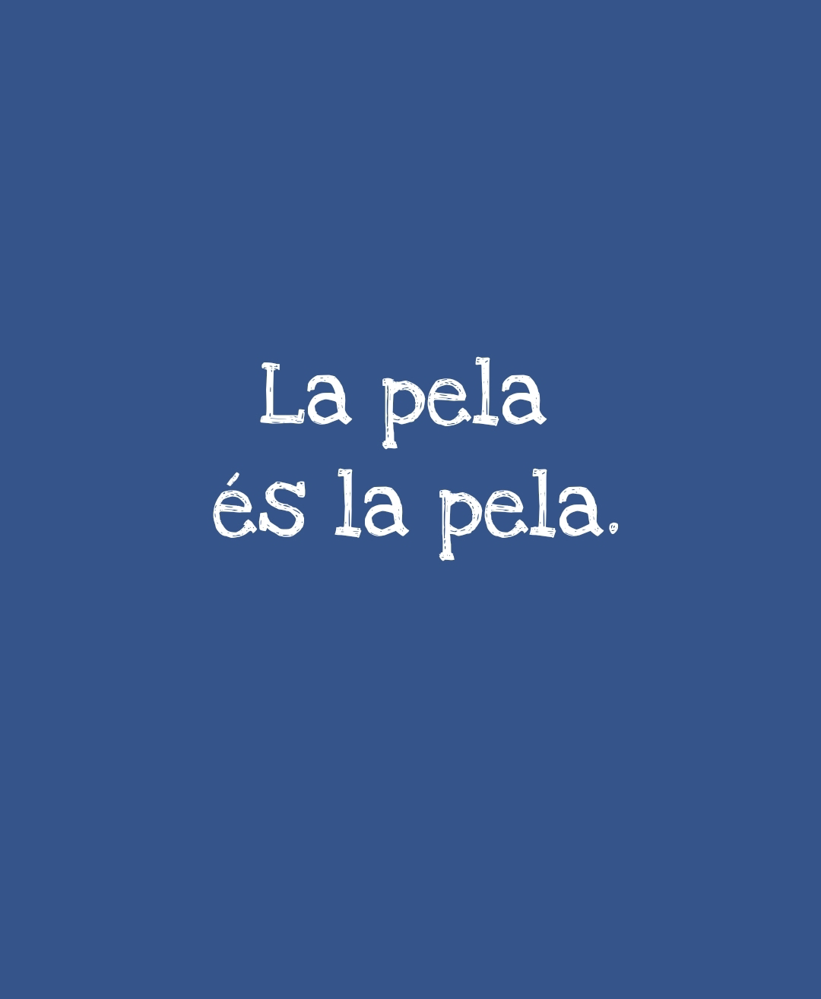
El estereotipo histórico del catalán tacaño, reapropiado durante el procés como argumento económico. Si Cataluña aporta más de lo que recibe, claro que se queja — "la pela és la pela". El chiste se convirtió en consigna.
"El gran desinfle"
Aquí viene la parte que casi nadie predijo en 2017: el conflicto se ha desinflado. No ha desaparecido, pero hoy es una sombra de lo que fue. Y la mejor manera de verlo es comparar.
personas llenaron Barcelona. Banderas, cánticos, mosaicos humanos gigantes. La Diada como acto político masivo.
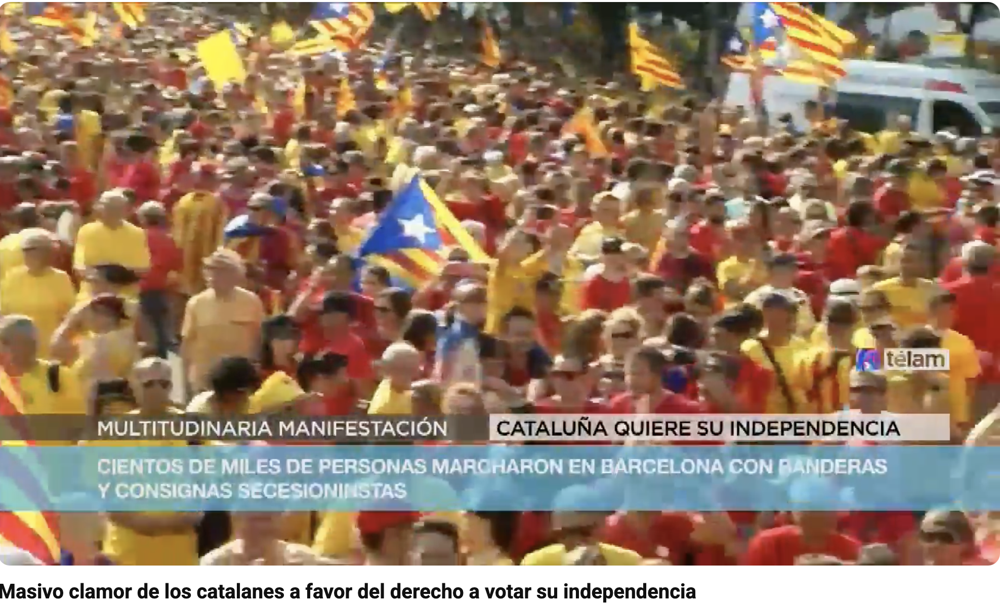
personas en la concentración. Algunas portadas de periódicos catalanes hablan abiertamente de "la fatiga del procés".
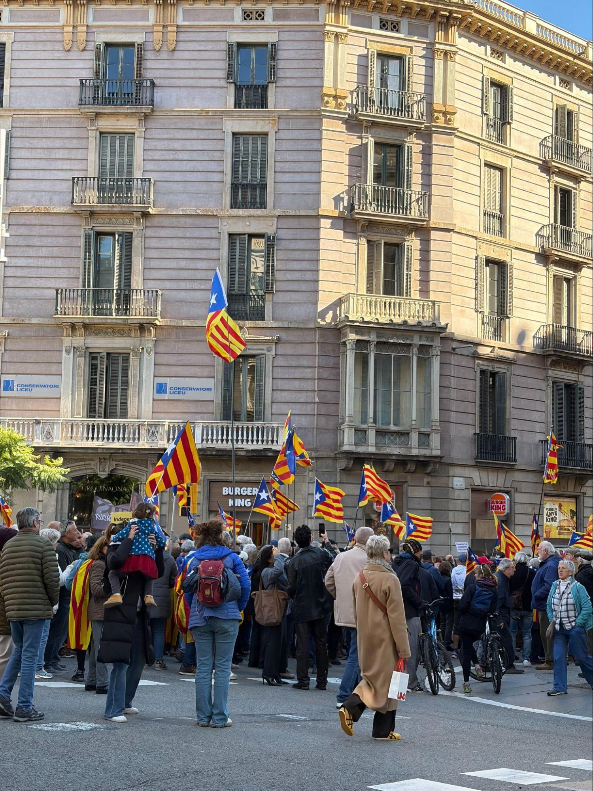
¿Qué pasó? Varias cosas a la vez. Los líderes del 2017 acabaron en la cárcel o en el exilio (Puigdemont sigue en Bélgica, aunque la Ley de Amnistía de 2024 le ha facilitado la vuelta). El independentismo se rompió en peleas internas entre ERC, Junts y la CUP, que ya no se ponen de acuerdo ni en el orden del día. Y, por primera vez en una década, las fuerzas independentistas ya no tienen mayoría absoluta en el Parlament: gobierna el socialista Salvador Illa, un señor que va a misa, no se exilia y aburre lo justo.
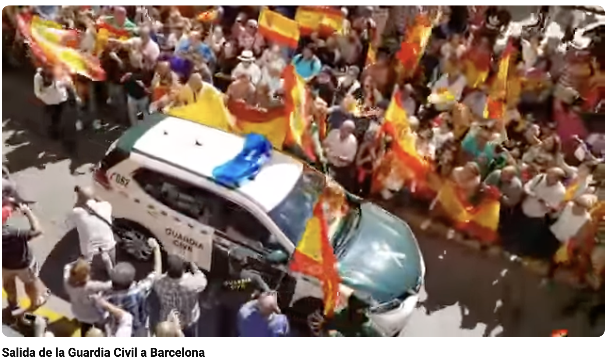
El independentismo está más débil, pero la polarización que provocó sigue muy viva. Vox no se ha ido a ningún lado, y cualquier negociación con Cataluña — los indultos de 2021, la amnistía de 2024 — se vive en parte de España como una traición.